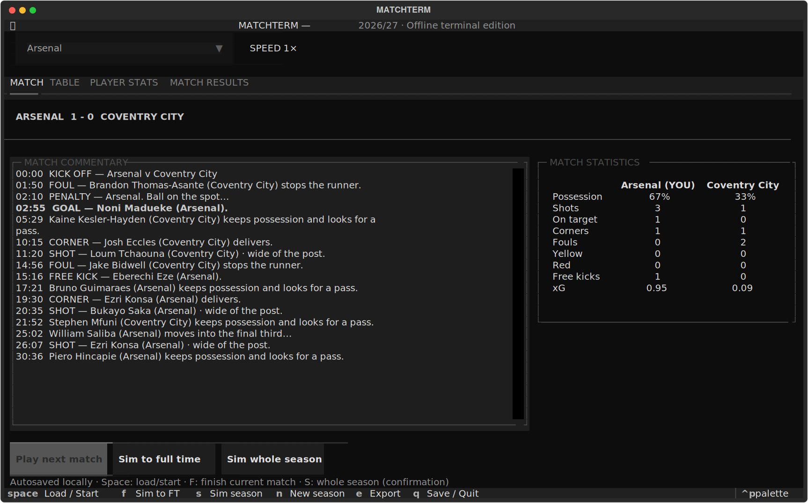
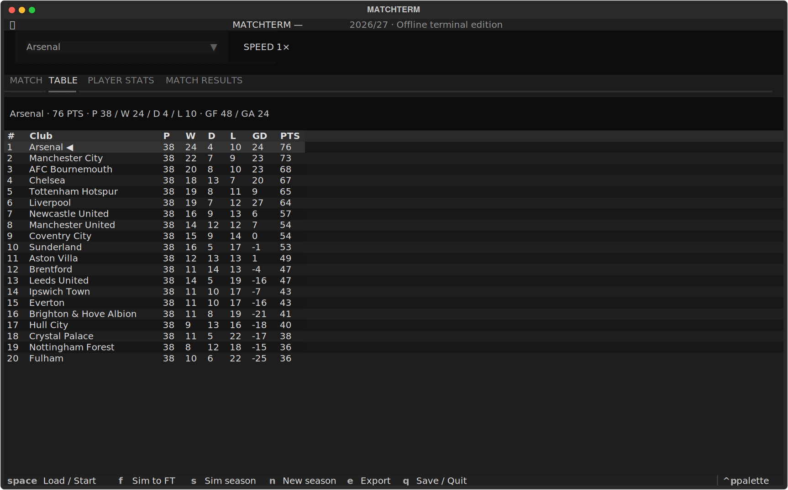
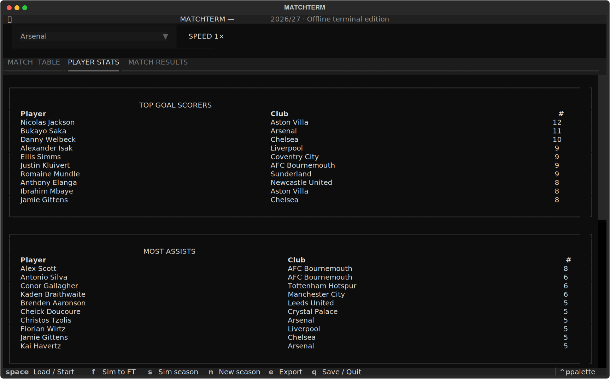

A first testable offline terminal release for Windows 11, PowerShell 7 and Windows Terminal. No GitHub account or API key is required. An internet connection is needed for initial installation; normal gameplay is offline.
Already installed? Open PowerShell 7 and type:
matchterm
Select your club, press Space to load a fixture, then press Space again to start it. Use Left / Right to switch views, Up / Down to browse, and Q to save and quit.
Open README.html for this guide with pictures. README.md contains the same information for Markdown viewers. The game runs locally; this ZIP does not publish a website or create a GitHub repository.
These are captures of the actual terminal app in a test environment, with illustrative simulated results. Windows Terminal font and window styling may differ.


The extracted ZIP is an installation package, not your save folder. Updating does not reset your active season. The game is copied into uv's managed tool environment, so you can move or delete the extracted folder after installation. Keep it if you want the screenshots, source or installer available later.

matchterm-terminal folder.Setup installs uv if missing, installs MATCHTERM and Python if needed, updates PATH, and launches the game in the same session. Internet is required for setup. Existing saves stay in %LOCALAPPDATA%\MATCHTERM when updating. The command file runs the bundled PowerShell installer with execution-policy bypass for that process only; it does not permanently change your execution policy.
For later launches, open PowerShell 7 and run matchterm. If you prefer terminal setup, run pwsh -NoProfile -ExecutionPolicy Bypass -File .\Install.ps1 from this folder.
If setup reports that winget is missing, install App Installer from Microsoft Store and retry.
Select a club before loading your first match. Play next match loads the fixture without starting it; Start match begins the live timeline. A match takes about three minutes at 1×. Results are locked for that season. Quitting and reopening resumes the same match and unrevealed events; it does not advance while closed.
| Key | Action |
|---|---|
| Space | Load next fixture / start match |
| F | Simulate the current fixture to full time |
| S | Simulate the remaining season, after confirmation |
| 1 / 2 / 4 | Change speed |
| N | Start a fresh season after completion |
| E | Export the current season as JSON |
| Q | Save and quit |
| Left / Right | Switch between Match, Table, Player Stats and Match Results |
| Up / Down | Scroll content; Up at the top returns to the navigation bar, Down enters content |
| Page Up / Page Down | Scroll by a page |
| Tab / Shift+Tab | Move between controls |
| Enter | Activate the focused control |
| Escape | Cancel confirmation |
The tabs show live commentary, league standings, goals/assists/yellow/red leaderboards, and all committed league results. Click a saved result row to inspect its commentary. For comfortable display, use at least 120 columns and 35 rows; maximise Windows Terminal or reduce its font size. At small sizes keyboard shortcuts are available even if some buttons are clipped.
| Tab | Contents | Navigation |
|---|---|---|
| Match | Current fixture, clock, named commentary and team-labelled statistics | Up / Down scroll commentary |
| Table | Standings for all 20 clubs and your club's record | Up / Down move through rows |
| Player Stats | Top ten players for goals, assists, yellow cards and red cards | Up / Down scroll through the four lists |
| Match Results | Every committed league result, including other clubs | Up / Down select rows; Enter opens saved commentary |
Left / Right switches tabs from the view or navigation bar. Press Up at the top of a list to return focus to the navigation bar. Press Down from the bar to enter the selected view. Within the club selector, arrows select clubs instead; finish the selection with Enter. A saved-commentary window closes with Escape or its Close button.
Goals favour the forward pool. Assists favour creative players, and card events are assigned to named players. These are simplified simulation weights. Possession is estimated from simulated possession events, and xG is the sum of modelled shot probabilities; neither is measured real-world data. Some goals have no assist, including penalties. A second yellow is counted as both a yellow-card event and a dismissal.
Paste this into the File Explorer address bar:
%LOCALAPPDATA%\MATCHTERM
seasons.sqlite3: all seasons, including the active game.seasons-backup.sqlite3: backup taken before starting a fresh season.season-<number>.json: files created with E (Export).The database saves periodically and after match events. Close with Q for an immediate clean save. A sudden process kill may lose up to roughly one second of clock progress but not reroll the locked events. Older seasons are retained when starting a new one, but this first release does not yet have an archive selection screen. Updates and uninstalling the app do not intentionally delete saves. For a manual backup, close the game and copy the entire save folder. Open it directly with:
matchterm --open-save-folder
Browser seasons are separate and are not imported into this edition. Run one app window per save folder. Conflicting saves from another window are rejected instead of overwritten. A separate test save location is supported:
matchterm --save-folder "$env:USERPROFILE\Documents\MATCHTERM-Test"
Backup: quit with Q, then copy the entire %LOCALAPPDATA%\MATCHTERM folder to a safe location. SQLite may create seasons.sqlite3-wal and seasons.sqlite3-shm while the app is running; copying the full folder after closing is safer than copying an open database alone.
Automatic backup: seasons-backup.sqlite3 is refreshed before starting a new season. It is one rolling backup, not a separate backup for every match or season.
Export: press E to write season-<number>.json into the save folder. Export includes the current season state, committed results, commentary and player totals. Exporting the same season again replaces that season's existing JSON export. JSON import is not yet supported, so retain the database for resuming play.
Restore a manual folder backup: close every MATCHTERM window. Rename the current save folder to MATCHTERM-before-restore, then copy the backed-up folder into the original %LOCALAPPDATA%\MATCHTERM location. Launch the game. Keep the renamed folder until you have confirmed the restored season is correct.
Restore the automatic database backup: close the app and copy the full current folder somewhere safe first. Create a fresh MATCHTERM save folder containing a copy of seasons-backup.sqlite3 renamed to seasons.sqlite3, then launch. Do not carry old WAL/SHM files into the restored folder.
For privacy, gameplay and saves remain local. No account, API key or cloud save service is used. Installing prerequisites connects to package download services. A custom save folder inside OneDrive or another synced directory follows that directory's own syncing rules. Saves are not shared between laptops automatically.
| Item | Approximate measured size |
|---|---|
| Fresh season database | 16 KB |
| Mid-match database | 24 KB |
| Complete season database with 380 match logs | 3.3 MB |
| Full-season JSON export | 4.9 MB |
Sizes vary with events and player names. Retained seasons increase database size, and the rolling backup can approximately double database storage. Exports are additional files. There is no season-deletion interface in this release.
| Problem | What to do |
|---|---|
matchterm is not recognised |
Run Start-MATCHTERM.cmd again. It updates PATH for its own session and launches directly. For a manually opened PowerShell session, use the commands below. |
uv is not recognised |
Use the bundled setup, which checks for uv and installs it via winget. |
| winget is missing | Install Microsoft's App Installer from Microsoft Store, then run setup again. |
| The release wheel is missing | Extract the entire ZIP and run the launcher beside Install.ps1. Do not run it from inside the ZIP preview. |
| Installation fails during downloads | Check your connection and retry setup. Copy the full error text if it continues. |
| Buttons or rows are clipped | Maximise Windows Terminal or reduce font size. Aim for at least 120 columns and 35 rows. |
| Arrows do not scroll the list | Finish any open club selector or dialog with Enter/Escape. Return to the desired tab and press Down to enter its content. |
| Save conflict from another window | Close the duplicate window and reopen one instance. The conflict guard prevents overwriting another session's changes. |
| A save error or unsupported schema appears | Keep the database intact and copy the error text. Do not delete it as a troubleshooting step. |
If the app installed successfully but a separate shell still cannot find it, run:
$toolBin = (uv tool dir --bin | Out-String).Trim()
$env:PATH = "$toolBin;$env:PATH"
matchterm
For help, provide the app version, PowerShell version ($PSVersionTable.PSVersion), the action you were taking and the full error text. A screenshot of the terminal can help with layout issues. Avoid including private exports unless they are needed to investigate your save.
Close MATCHTERM, then run:
uv tool uninstall matchterm
This removes the installed app. Your save folder and downloaded/extracted release files remain. Keep a backup before manually removing saves.
The release has been tested in a Linux environment using Python 3.12 and Textual 1.0.0, including automated terminal UI interaction, confirmation cancellation, mid-match save/resume, full-season totals and reset. Installation and arrow-key navigation have also been confirmed by the user on Windows 11 with PowerShell 7.6.6 and Windows Terminal. The automated tests themselves ran on Linux, not Windows. This is a first test release, not a completed commercial release.
Fixtures and squads are bundled snapshots from the browser prototype's official Premier League sources. No live data updates happen during play:
Names and fixtures are real snapshot data; ratings, events and results are fictional. Forward/goalkeeper pools and simplified remaining role weights are illustrative, not an authoritative tactical database. Sent-off players are excluded from later events in that match; suspensions across matches, real lineups, injuries, transfers and substitutions are not modelled in this release. League tie-breaking uses points, goal difference, goals scored, then alphabetical order for unresolved ties.
The ZIP includes source, package metadata and tests, ready to put into your own private repository. No remote repository has been created. Keep saves and exports out of Git. Install from source with uv tool install --python 3.12 . or create a development environment with uv venv, then uv pip install -e ..
Run engine tests: python -m unittest discover -s tests -p test_engine.py
Run terminal UI tests: python tests/test_ui.py
Rebuild the wheel: python -m pip wheel --no-deps --wheel-dir releases .